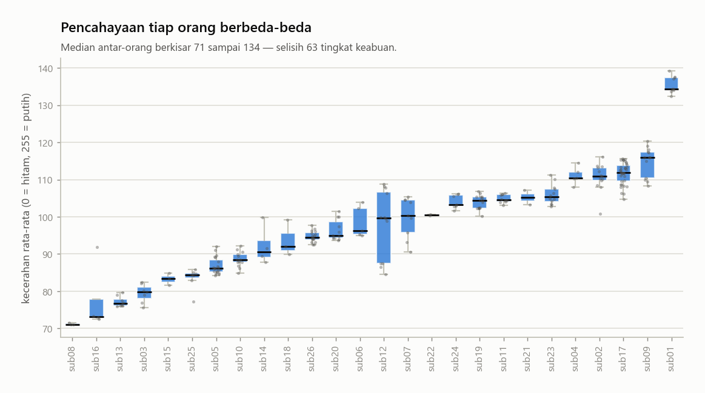
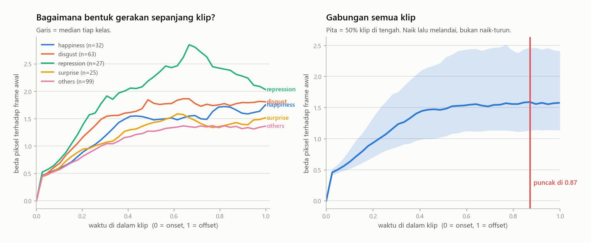
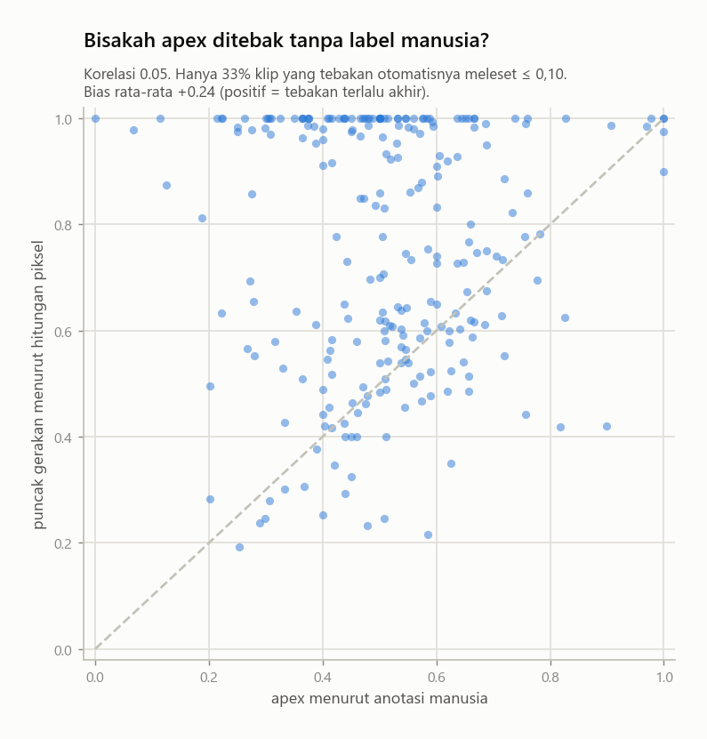
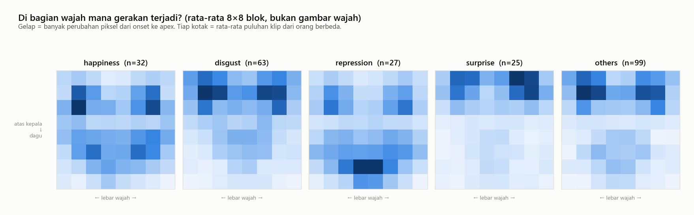
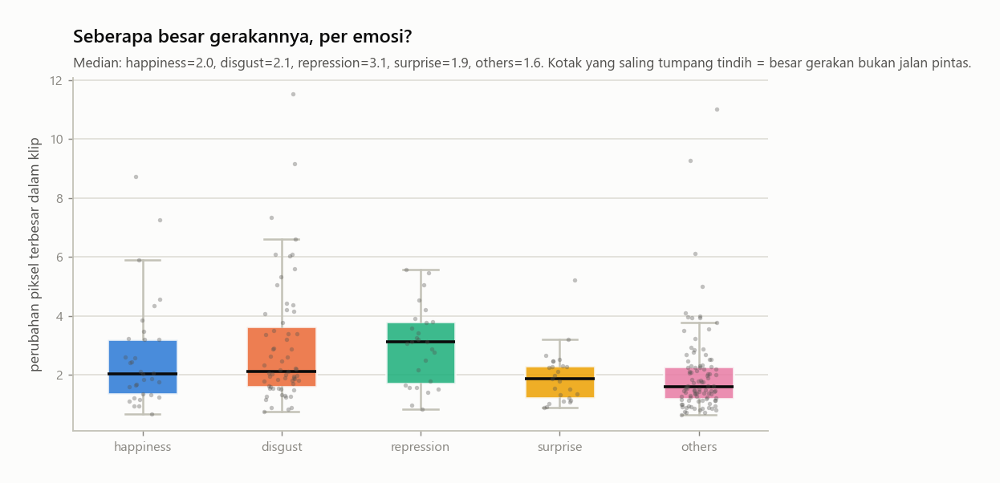
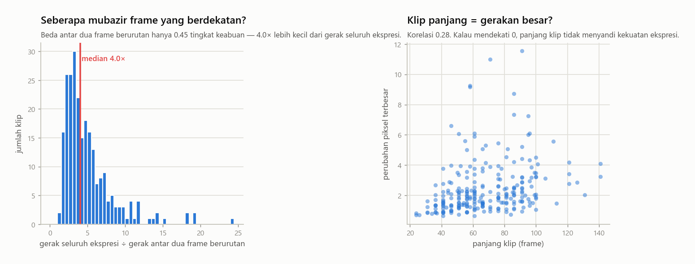

Bagian ini menghitung dari isi gambar — bukan menampilkannya.
Tiap frame didekode sebentar menjadi matriks angka 32×32, diambil statistiknya,
lalu dibuang. Tidak ada gambar yang disimpan, ditampilkan, atau dikirim ke mana pun.
Ukuran piksel tiap klip berbeda-beda (sekitar 225–300 lebarnya), tapi bentuknya hampir seragam: rasio tinggi÷lebar berkumpul rapat di sekitar 1,21.
Kenapa ini penting: model butuh masukan berukuran tetap, jadi semua gambar akan diregangkan. Kalau rasionya bervariasi lebar, wajah akan melar berbeda-beda dan itu jadi derau. Di sini hasilnya kabar baik: rasionya sudah konsisten, jadi resize ke ukuran tetap hampir tidak menimbulkan distorsi tambahan. Satu sumber masalah yang bisa dicoret dari daftar.
11

Kecerahan rata-rata tiap orang berbeda jauh: dari 71 sampai 134 dari skala 0–255.
Kenapa ini penting: ini disebut domain shift. Model bisa diam-diam belajar 'gambar terang = orang A', dan kemampuannya runtuh saat diuji pada orang yang belum pernah dilihat. Ini salah satu penyebab hasil antar-orang naik-turun ekstrem. Penangkalnya: normalisasi per klip (kurangi rata-rata, bagi simpangan baku) atau pakai selisih antar-frame, bukan piksel mentah.
12

Sumbu tegak = seberapa jauh sebuah frame berbeda dari frame pertama, dihitung langsung dari piksel. Sumbu datar = posisi waktu di dalam klip.
Kenapa ini penting: kurvanya naik lalu melandai, bukan naik-turun kacau. Artinya sinyalnya mulus terhadap waktu — model urutan memang cocok, dan mengambil 16 frame dari klip tidak akan merusak bentuk kurva ini. Kalau kurva tiap kelas berbeda bentuknya, itu berarti pola waktu membawa informasi kelas, bukan cuma satu frame puncak.
13

Sumbu datar = apex yang ditandai manusia. Sumbu tegak = frame dengan perubahan piksel terbesar, dihitung otomatis. Garis putus-putus = tebakan otomatis persis sama dengan manusia.
Kenapa ini penting: di video upload nanti tidak ada apex dari manusia. Grafik ini mengukur seberapa jauh penggantinya meleset. Titik yang berkumpul di atas garis berarti tebakan otomatis cenderung terlalu akhir — itu bias yang bisa dikoreksi, dan koreksinya harus dihitung dari data latih saja, jangan dari data uji.
14

Wajah dibagi jadi kotak 8×8. Warna tiap kotak = rata-rata besarnya perubahan piksel dari onset ke apex, dirata-ratakan atas puluhan klip dari orang berbeda. Ini peta angka, bukan foto.
Kenapa ini penting: ini menunjukkan di mana sinyal berada. Kalau kotak gelapnya berkumpul di daerah mulut untuk satu kelas dan di daerah alis untuk kelas lain, memotong wilayah wajah (ROI) masuk akal. Kalau petanya mirip semua, ROI tidak akan menolong — dan itu menghemat berhari-hari percobaan.
15

Seberapa besar perubahan piksel maksimum dalam satu klip, dipisah per emosi.
Kenapa ini penting: pemeriksaan jalan pintas kedua. Kalau satu kelas jelas bergerak lebih besar, model bisa menang hanya dengan mengukur 'seberapa ramai'. Kotak yang bertumpang tindih berarti model terpaksa belajar bentuk gerakan, bukan sekadar besarnya — itu yang kita mau.
16

Kiri: berapa kali lipat gerakan seluruh ekspresi dibanding gerakan antara dua frame yang berurutan. Kanan: apakah klip yang panjang cenderung punya gerakan besar.
Kenapa ini penting: pada 200 frame/detik, dua frame berurutan nyaris identik — bedanya kurang dari setengah tingkat keabuan, setipis derau kamera. Artinya informasinya jauh lebih sedikit daripada jumlah framenya. Ini alasan teknis kenapa memilih 16 frame dari 65, atau menurunkan ke 30 frame/detik, tidak otomatis merusak sinyal. Panel kanan memastikan panjang klip tidak diam-diam menyandi kekuatan ekspresi.